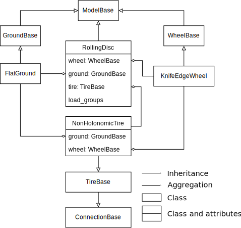

Rolling Disc From Scratch¶
Welcome to this model developers tutorial on creating a rolling disc model from scratch using SymBRiM!
This notebook is a hands-on tutorial on your own models, connections, and load groups in SymBRiM. By the end of this tutorial, you’ll have achieved the following learning goals:
Create base classes for models and connections.
Create a submodel.
Create a parent model.
Create a connection.
Create a load group.
The setup of this tutorial also aims to follow the style guide used in SymBRiM’s source code to acustom you with the style expected by SymBRiM developers. An example is the obligated usage of docstrings and type hints in function signatures.
Before diving into this tutorial, it’s recommended that you familiarize yourself with Objected Oriented Programming (OOP), SymPy, the architecture of SymBRiM (refer to the sections on Software Overview to BRiM Models in the SymBRiM paper), and the guidelines on implementing components in SymBRiM. This background information will provide valuable context for what we’ll cover here.
Rolling Disc Model¶
Shown below is a freebody diagram of the rolling disc we will model in this tutorial. The rolling disc is defined as an infinitesimally thin disc, rolling on the ground without lateral and longitudinal slip. The disc itself is defined with respect to the ground with a subsequent yaw-roll-pitch body-fixed rotation. Its contact point is defined to be in the ground plane at \(q_1 \hat{n}_x + q_2 \hat{n}_y\) from the origin. As for the generalized speeds used in Kane’s method, those are defined as \(u_i = \dot{q}_i\) for \(i=1,...,5\). The ground is treated as the Newtonian body, the disc as a rigid body with a specified mass, inertia, and radius. To control the disc three time-varying torques are used: \(T_{drive}\) acts about the rotation axis of the disc, \(T_{steer}\) acts about the axis going through the contact point and the center of the disc, and \(T_{roll}\) acts about the axis perpendicular to both the normal of the ground and the rotation axis.
Components Overview¶
As depicted in the figure below, the rolling disc model (RollingDisc) consists of two models, one connection and a set of load groups. Each body is represented by a separate model, as the bodies are expected to be modular. In this case, we will model the ground as a flat ground (FlatGround), but one can also use a ground with a slope. The description of a ground in general is defined in the ground base class (GroundBase). The wheel model describes the inertial properties and the
shape of the disc, in this case a knife-edge wheel (KnifeEgeWheel). To describe the interaction between the wheel and the ground, a nonholonomic tire model (NonHolonomicTire) is utilized. Reasons for using a connection are that the relation is rather complex to define in the parent model, RollingDisc, and it should also be modular and reusable in other parent models. We will use a load group to apply a driving, rolling, and steering torque (RollingDiscControl), we will apply
gravity after creating the final system instance.

Tutorial Overview¶
This tutorial is structured as follows. We start with an explanation of the implementation of both the abstract base class of the ground model as well as the implementation of the flat ground. Next, we continue with the implementation of the knife-edge wheel, while inheriting the abstract base class, WheelBase, from SymBRiM. With both submodels implemented, we will implement the tire base class and tire model, which uses nonholonomic constraints to enforce pure-rolling. Next, we will
implement the overarching rolling disc model class. After which we create a load group to control the rolling disc. Finally, we will use our code to form the equations of motion (EoMs) of the rolling disc model.
Note that the classes implemented in this tutorial are simplified w.r.t. their implemention in the source code of SymBRiM. However, we will try to follow standards used in the development of SymBRiM, like type hinting.
Imports¶
Below we import the classes and functions we will require in this tutorial. Feel free to add any if your missing some.
[1]:
from abc import abstractmethod
from sympy import Expr, MutableMatrix, Symbol, symbols
from sympy.physics.mechanics import *
from utils import (
check_documentation,
verify_flat_ground,
verify_ground_base,
verify_knife_edge_wheel,
verify_rolling_disc,
verify_rolling_disc_control,
verify_tire_base,
)
from symbrim.bicycle.wheels import WheelBase
from symbrim.core import (
ConnectionBase,
ConnectionRequirement,
LoadGroupBase,
ModelBase,
ModelRequirement,
)
GroundBase Implementation¶
In this section, we will delve into the implementation of the GroundBase class, which serves as the base class for defining the properties and methods shared by various ground models in SymBRiM.
What is a Base Class?¶
A base class, such as GroundBase, plays a crucial role in SymBRiM by providing a common structure for related components. In the case of ground models, they share three essential properties and three methods.
The three attributes defined in GroundBase are as follows:
body: Represents the rigid body associated with the ground.frame: A reference frame fixed to the ground.origin: The point that denotes the center of mass of the ground model.
The three methods prescribed in GroundBase are:
normal: Property returning the normal vector of the ground.tangent_vectors: Property returning the tangent vectors of the ground plane.set_pos_point(point, position): Sets the positions of a point relative to the origin
These common attributes streamline the creation of different ground models. Subclasses, like the flat ground model we’ll discuss, only need to implement specific methods.
Note: The actual implementation of the GroundBase in SymBRiM is a bit different, as the normal vector and tangent vectors are positional dependent.
Additionally, GroundBase creates a System instance in the define objects stage, as any model or connection in SymBRiM must do. This System instance is used to store all information, like bodies, joint, and generalized coordinates, such that these can later be retrieved
in the ModelBase.to_system() method.
Define Steps¶
In SymBRiM, the definition of a model is divided into several stages, ensuring the proper decoupling between components. These steps are as follows:
Define connections: This step enables parent models to associate submodels with their respective connections.
Define objects: In this step, we create objects, such as symbols and reference frames, without defining any relationships between them.
Define kinematics: We establish relationships between the objects, specifying their orientations, positions, velocities, and accelerations.
Define loads: Here, we specify the forces and torques acting upon the system.
Define constraints: The final step involves computing the holonomic and nonholonomic constraints to which the system is subject.
To implement the “define” steps in a model, connection, or load group, a leading underscore is added to the method name. For example, _define_<step>. These methods solely implement the “define” step for the component itself without traversing the submodels and load groups.
BrimBase contains the implementation of the “define” methods, including traversal, which should be called by the user. These methods follow the format define_<step>.
For more information refer to the guidelines on implementing components.
Exercise¶
As an exercise, complete the implementation of the GroundBase class, seen below, by implementing two specific properties: origin and tangent_vectors. The origin property should return the center of mass of the ground body, and the tangent_vectors property should be abstract.
[2]:
class GroundBase(ModelBase):
"""Base class for the ground."""
def _define_objects(self) -> None:
"""Define the objects of the ground."""
# When overwriting a method from a parent class, it is good practise to call
# the parent method first. In this case, the _define_objects method of the
# ModelBase class is called.
super()._define_objects()
# Create a rigid body to represent the ground.
self._body = RigidBody(self.name)
self._body.masscenter = Point(self._add_prefix("origin"))
# Create the system object of the ground.
self._system = System.from_newtonian(self.body)
def _define_kinematics(self) -> None:
"""Define the kinematics of the ground."""
super()._define_kinematics()
# Fixate the origin in the ground frame.
self.origin.set_vel(self.frame, 0)
@property
def body(self) -> RigidBody:
"""The body representing the ground."""
return self._body
@property
def frame(self) -> ReferenceFrame:
"""Frame fixed to the ground."""
return self.body.frame
### BEGIN SOLUTION
@property
def origin(self) -> Point:
"""Origin of the ground."""
return self.body.masscenter
### END SOLUTION
# The abstractmethod decorators make sure that subclasses have to implement these
# methods.
@property
@abstractmethod
def normal(self) -> Vector:
"""Normal vector of the ground."""
### BEGIN SOLUTION
@property
@abstractmethod
def tangent_vectors(self) -> tuple[Vector, Vector]:
"""Tangent vectors of the ground plane."""
### END SOLUTION
@abstractmethod
def set_pos_point(self, point: Point, position: tuple[Expr, Expr]) -> None:
"""Locate a point on the ground."""
# Verification code.
verify_ground_base(GroundBase)
FlatGround Implementation¶
In the context of SymBRiM, the flat ground model (FlatGround) needs to implement the abstract methods defined in the GroundBase class. Specifically, this involves defining the behavior of the ground in terms of the normal vector, tangent vectors, and the ability to set the position of points in the ground plane.
The normal vector represents the unit vector in the negative Z-direction, defining the orientation of the ground plane.
The tangent vectors returns the X- and Y-unit vectors as a tuple, providing a basis for relationships between objects.
The
set_pos_pointmethod enables the positioning of a given point (point) in the ground plane with respect to the origin.
Exercise¶
Complete the implementation of the FlatGround class below by implementing the following:
tangent_vectors: Define this property to return the X- and Y-unit vectors as a tuple.set_pos_point: Implement this method to set the location of a given point (point) in the ground plane using the provided position. You can usePoint.set_posto set the point’s position.
[3]:
class FlatGround(GroundBase):
"""Flat ground."""
@property
def normal(self) -> Vector:
"""Normal vector of the ground."""
return -self.frame.z
### BEGIN SOLUTION
@property
def tangent_vectors(self) -> tuple[Vector, Vector]:
"""Tangent vectors of the ground plane."""
return self.frame.x, self.frame.y
def set_pos_point(self, point: Point, position: tuple[Expr, Expr]) -> None:
"""Set the location of a point on the ground."""
point.set_pos(self.origin,
position[0] * self.frame.x + position[1] * self.frame.y)
### END SOLUTION
# Verification code.
verify_flat_ground(FlatGround)
KnifeEdgeWheel Implementation¶
In many cases, we don’t need to create our own base classes; instead, we can leverage the existing ones provided by SymBRiM. In this section, we will implement a knife-edge wheel, which builds upon the WheelBase class from SymBRiM.
Inheriting from WheelBase¶
Similar to the flat ground, the knife-edge wheel inherits from an abstract class, WheelBase. This time we will just use the one defined already in SymBRiM. WheelBase already defines a rigid body (body) and a body-fixed frame (frame) to represent the wheel. Additionally, it prescribes the implementation of two properties:
rotation_axis: AVectorrepresenting the rotation axis.center: APointrepresenting the wheel’s center.
In the code below, we will implement these two properties. The center property returns the center of mass as a Point to represent the center of the wheel, and the rotation_axis property returns the body-fixed Y-axis as a Vector to represent the rotation axis of the wheel.
Symbol Handling¶
Apart from defining these properties, we need to introduce a radius symbol to describe the shape of the wheel. In SymBRiM, we store symbols in the symbols dictionary created by BrimBase. This dictionary allows users to change a symbol after the “define object” stage, providing flexibility in symbol definitions. Here is a short example:
wheel = KnifeEdgeWheel("wheel")
wheel.define_objects()
print(repr(wheel.symbols["r"])) # Prints Symbol("wheel_r")
wheel.symbols["r"] = Symbol("my_r")
print(repr(wheel.symbols["r"])) # Prints Symbol("my_r")
Additionally, descriptions for symbols are stored in the descriptions property, which can be used for documentation purposes. BrimBase.get_description uses these properties to allow a user to request the definition of a symbol, e.g. bicycle.get_description(wheel.symbols["r"]) should return something like Radius of the wheel..
Within SymBRiM’s source code we use BrimBase._add_prefix to add the name of the instantiated model as a prefix to each symbol. This ensures that the symbols created among different models stay unique, assuming the user instantiates the models with unique names. For example:
wheel_rear = KnifeEdgeWheel("wheel_rear")
wheel_front = KnifeEdgeWheel("wheel_front")
wheel_rear.define_all()
wheel_front.define_all()
assert wheel_rear.symbols["r"] != wheel_front.symbols["r"]
For more information refer to the guidelines on implementing components.
Exercise¶
Complete the implementation of the KnifeEdgeWheel class by implementing the following:
center: Define this property, which returns the center of mass as aPointto represent the center of the wheel.rotation_axis: Define this property, which returns the body-fixed Y-axis as aVectorto represent the rotation axis of the wheel.Define a symbol for the radius and use
"r"as key in theself.symbolsdictionary.
[4]:
class KnifeEdgeWheel(WheelBase):
"""Knife-edge wheel."""
### BEGIN SOLUTION
@property
def descriptions(self) -> dict[object, str]:
"""Descriptions of the attributes of the wheel."""
return {
**super().descriptions,
self.symbols["r"]: """Radius of the wheel.""",
}
def _define_objects(self) -> None:
"""Define the objects of the wheel."""
super()._define_objects()
self.symbols["r"] = Symbol(self._add_prefix("r"))
@property
def center(self) -> Point:
"""Point representing the center of the wheel."""
return self.body.masscenter
@property
def rotation_axis(self) -> Vector:
"""Rotation axis of the wheel."""
return self.frame.y
### END SOLUTION
# Verification code.
verify_knife_edge_wheel(KnifeEdgeWheel)
TireBase Implementation¶
In the context of the rolling disc model, the interaction between the wheel and the ground is complex and demands a modular design. To accommodate this, a new type of connection has been introduced to specify the tire model responsible for defining this interaction. This connection is facilitated by the abstract class TireBase.
Note: The implementation of tire model connections can be challenging, so if you find the details daunting, you can continue reading and return later.
Functionality Overview¶
The TireBase class provides several essential properties and methods:
ground: A property that accepts any type of ground model, as long as it inherits fromGroundBase.wheel: A property that accepts any type of wheel model, as long as it inherits fromWheelBase.contact_point: A property that returns aPointto represent the contact point between the wheel and the ground.on_ground: A boolean property that specifies whether the wheel is defined to always touch the ground or whether a holonomic constraint should be used. This boolean is by defaultFalse, but can be set toTrueby the parent.
All other functionalities, such as computing the constraints and tire forces, are meant to be implemented in the define steps. For instance, the nonholonomic constraints should be set in define_constraints when implementing NonHolonomicTire.
Creation of Submodel Properties¶
In SymBRiM, the class property required_models is used to specify submodel properties. required_models should be a tuple of ModelRequirements. Refer to the implementation guidelines for more information.
Contact Point Computation¶
Since most tire models require computing the contact point between the wheel and the ground, TireBase also implements _set_pos_contact_point. This protected method computes the contact point based on the types and properties of the ground and wheel. Once computed, it saves the location w.r.t. the wheel. It’s important to note that this method should be called by the child class, e.g., NonHolonomicTire, as not every tire model may utilize this method.
Exercise¶
Implement the following methods/properties in the TireBase class. Refer above for details on each of the properties.
Implement the
groundandwheelproperties using therequired_modelsclass attribute.Do not forget to instantiate a
Systemin_define_objects.Implement the
on_groundproperty, while setting it toFalseby default in_define_objects.Implement the
contact_pointproperty, while instantiating the point in_define_objects.
[5]:
class TireBase(ConnectionBase):
"""Base class for the tire model connectors."""
### BEGIN SOLUTION
required_models: tuple[ModelRequirement, ...] = (
ModelRequirement("ground", GroundBase, "Submodel of the ground."),
ModelRequirement("wheel", WheelBase, "Submodel of the wheel."),
)
# These type hints are useful for IDEs as the properties are created dynamically.
ground: GroundBase
wheel: WheelBase
### END SOLUTION
def _set_pos_contact_point(self) -> None:
"""Compute the contact point of the wheel with the ground."""
if (
isinstance(self.ground, FlatGround)
and isinstance(self.wheel, KnifeEdgeWheel)
):
self.wheel.center.set_pos(
self.contact_point,
self.wheel.symbols["r"] * cross(
self.wheel.rotation_axis,
cross(self.ground.normal, self.wheel.rotation_axis)).normalize()
)
return
raise NotImplementedError(
f"Computation of the contact point has not been implemented for the "
f"combination of {type(self.ground)} and {type(self.wheel)}.")
### BEGIN SOLUTION
def _define_objects(self) -> None:
"""Define the objects of the tire model."""
super()._define_objects()
self._system = System.from_newtonian(self.ground.body)
self._contact_point = Point(self._add_prefix("contact_point"))
self._on_ground = False
@property
def contact_point(self) -> Point:
"""Point representing the contact point of the wheel with the ground."""
return self._contact_point
@property
def on_ground(self) -> bool:
"""Boolean whether the wheel is already defined as touching the ground."""
return self._on_ground
@on_ground.setter
def on_ground(self, value: bool) -> None:
self._on_ground = bool(value)
### END SOLUTION
# Verification code.
verify_tire_base(TireBase, FlatGround, KnifeEdgeWheel)
NonHolonomicTire Implementation¶
The NonHolonomicTire is a tire connection that enforces pure-rolling using nonholonomic constraints. It inherits from TireBase and re-specifies the class attribute required_models, as it will only be working with the KnifeEdgeWheel and FlatGround.
During the define kinematics step, the _set_pos_contact_point method is employed to determine the position of the contact point. The nonholonomic constraints are defined in the _define_constraints method. Two distinct constructs are employed to calculate the velocity of the wheel center. Both of these velocities should be the same. However, they use different mathematical equations. The constructs use are:
The velocity of the wheel center is calculated by taking the time derivative of its position.
The contact point serves as the instantaneous center of rotation. By leveraging this fact, the velocity can be computed as the cross product of the angular velocity of the wheel and the distance from the contact point to the wheel’s center.
[6]:
class NonHolonomicTire(TireBase):
"""Tire model connection based on nonholonomic constraints."""
required_models: tuple[ModelRequirement, ...] = (
ModelRequirement("ground", FlatGround, "Submodel of the ground."),
ModelRequirement("wheel", KnifeEdgeWheel, "Submodel of the wheel."),
)
def _define_kinematics(self) -> None:
"""Define the kinematics of the tire model."""
super()._define_kinematics()
self._set_pos_contact_point()
def _define_constraints(self) -> None:
"""Define the constraints of the tire model."""
super()._define_constraints()
# Get the normal and tangent vectors of the ground at the contact point.
normal = self.ground.normal
tangent_vectors = self.ground.tangent_vectors
# Compute the velocity of wheel center using two different constructs.
v1 = self.wheel.center.pos_from(self.ground.origin).dt(self.ground.frame)
v2 = cross(self.wheel.frame.ang_vel_in(self.ground.frame),
self.wheel.center.pos_from(self.contact_point))
# Compute and add the nonholonomic constraints.
self.system.add_nonholonomic_constraints(
dot(v1 - v2, tangent_vectors[0]), dot(v1 - v2, tangent_vectors[1]))
# Add a holonomic constraint if the wheel is not defined to be on the ground.
if not self.on_ground:
self.system.add_holonomic_constraints(
self.contact_point.pos_from(self.ground.origin).dot(normal))
Rolling Disc Model Implementation¶
Now that we have all are key components implemted, we can create the RollingDisc model. While each of the components defines its own system, the job of the RollingDisc as parent model is to connect them. It has two submodels, ground and wheel, which it needs to connect. In this definition it should use our newly created tire connection as utility.
The first step of implementing the RollingDisc class is to specify its submodels. Like with the connections, we can do so by specifying the class property required_models with ModelRequirements. Required connections can be specified similarly using the class property required_connections with ConnectionRequirements.
With the structure set up we need to implement each of the define steps according to the guidelines. In define connections we must associate the wheel and ground with the tire connection.
The following objects should be defined in the define objects step:
A
Systemshould be instantiated (as always).The define step for each connection should be called.
The
on_groundproperty of the tire should be set toTruebecause we will define the contact point to be in the ground plane by definition not with a holonomic constraint.Generalized coordinates and speeds must be created. The
RollingDiscwill use these to orient and position the wheel w.r.t. the ground. For each of these we should of course also make a description.
In the define kinematics step RollingDisc has to define the wheel w.r.t. the ground. The orientation can be done using ReferenceFrame.orient_body_fixed, while setting the position of the contact point using GroundBase._set_pos_point. In this process it should also utilize the tire connection to establish some of the relationships. For details on the
kinematics refer to the free body diagram at the top of this page. Hint: do not forget to add the generalized coordinates, generalized speeds, and kinematical differential equations to the system.
As for the define loads and define constraints step, the only necessity is to call the define step for the connections, in case those would define any loads or constraints.
Exercise¶
Implement the RollingDisc model using the components you have just implemented.
[7]:
class RollingDisc(ModelBase):
"""Rolling disc model."""
### BEGIN SOLUTION
required_models: tuple[ModelRequirement, ...] = (
ModelRequirement("ground", GroundBase, "Ground model."),
ModelRequirement("wheel", WheelBase, "Wheel model."),
)
required_connections: tuple[ConnectionRequirement, ...] = (
ConnectionRequirement("tire", TireBase, "Tire model."),
)
@property
def descriptions(self) -> dict[object, str]:
"""Dictionary of descriptions of the rolling disc's attributes."""
desc = {
**super().descriptions,
self.q[0]: "Perpendicular distance along ground.x to the contact point.",
self.q[1]: "Perpendicular distance along ground.y to the contact point.",
self.q[2]: "Yaw angle of the disc.",
self.q[3]: "Roll angle of the disc.",
self.q[4]: "Pitch angle of the disc.",
}
desc.update({ui: f"Generalized speed of the {desc[qi].lower()}"
for qi, ui in zip(self.q, self.u)})
return desc
def _define_connections(self) -> None:
"""Define the connections between the submodels."""
super()._define_connections()
self.tire.ground = self.ground
self.tire.wheel = self.wheel
def _define_objects(self) -> None:
"""Define the objects of the rolling disc."""
super()._define_objects()
# Define the system instance with the same reference as the ground.
self._system = System(self.ground.frame, self.ground.origin)
# Setup the tire model.
self.tire.define_objects()
self.tire.on_ground = True
# Define the generalized coordinates and speeds.
self.q = MutableMatrix([dynamicsymbols(self._add_prefix("q1:6"))])
self.u = MutableMatrix([dynamicsymbols(self._add_prefix("u1:6"))])
def _define_kinematics(self) -> None:
"""Define the kinematics of the rolling disc."""
super()._define_kinematics()
# Define the yaw-roll-pitch orientation of the disc.
self.wheel.frame.orient_body_fixed(self.ground.frame, self.q[2:], "zxy")
# Define the position of the contact point in the ground plane.
self.ground.set_pos_point(self.tire.contact_point, self.q[:2])
# Define the kinematics of the tire model.
self.tire.define_kinematics()
# Add coordinates, speeds and kinematic differential equations to the system.
self.system.add_coordinates(*self.q)
self.system.add_speeds(*self.u)
self.system.add_kdes(*(self.q.diff(dynamicsymbols._t) - self.u))
def _define_loads(self) -> None:
"""Define the loads of the rolling disc."""
super()._define_loads()
self.tire.define_loads()
def _define_constraints(self) -> None:
"""Define the constraints of the rolling disc."""
super()._define_constraints()
self.tire.define_constraints()
### END SOLUTION
# Verification code.
verify_rolling_disc(RollingDisc, FlatGround, KnifeEdgeWheel, NonHolonomicTire)
Control Load Group Implementation¶
We of course want to also control the disc using some loads, namely a drive, roll and steer torque at the wheel. To easily allow users to do so we can create a load group RollingDiscControl. When creating a load group the first step is to set the required type of the parent. In this case, the rolling disc is chosen as parent. This can be done by specifying the class property required_parent_type.
Exercise¶
Complete the implementation of RollingDiscControl, which applies a drive, roll and steer torque a the wheel. Each of the magnitudes should be defined as a dynamicsymbol and be stored in the self.symbols dictionary under the names "T_drive", "T_roll", and "T_steer" respectively. You can compute the roll axis using cross(self.parent.ground.normal, self.parent.wheel.rotation_axis) and the upward radial axis using cross(self.parent.wheel.rotation_axis, roll_axis).
[8]:
class RollingDiscControl(LoadGroupBase):
"""Rolling disc control load group."""
### BEGIN SOLUTION
required_parent_type = RollingDisc
@property
def descriptions(self) -> dict[object, str]:
"""Dictionary of descriptions of the rolling disc's controls."""
return {
**super().descriptions,
self.symbols["T_drive"]: "Drive torque.",
self.symbols["T_roll"]: "Roll torque.",
self.symbols["T_steer"]: "Steer torque.",
}
def _define_objects(self) -> None:
"""Define objects."""
super()._define_objects()
self.symbols.update({
name: dynamicsymbols(self._add_prefix(name)) for name in (
"T_drive", "T_roll", "T_steer")
})
def _define_loads(self) -> None:
"""Define loads."""
super()._define_loads()
roll_axis = cross(self.parent.ground.normal, self.parent.wheel.rotation_axis)
upward_radial_axis = cross(self.parent.wheel.rotation_axis, roll_axis)
self.system.add_loads(
Torque(self.parent.wheel.frame,
self.symbols["T_drive"] * self.parent.wheel.rotation_axis +
self.symbols["T_roll"] * roll_axis +
self.symbols["T_steer"] * upward_radial_axis,
)
)
### END SOLUTION
# Verification code.
verify_rolling_disc_control(RollingDiscControl, RollingDisc, FlatGround, KnifeEdgeWheel, NonHolonomicTire)
Build Rolling Disc¶
With all components defined the rolling disc model we can form the EoMs of our rolling disc. We should start with configuring the model by describing out of which components the rolling disc is composed. Next, we have to run all define steps. After which we can export it to a single system instance and apply gravity. The last step before generating the EoMs is to specify which generalized speeds are independent and which are dependent.
Exercise¶
Build the your rolling disc model and form the EoMs. You can use System.validate_system() to do some simple checks. Also, if you would like to use your equations, make sure to specify "CRAMER" as constraint solver.
[9]:
### BEGIN SOLUTION
# Configure the model by describing the components it consists out of.
rolling_disc = RollingDisc("disc")
rolling_disc.wheel = KnifeEdgeWheel("wheel")
rolling_disc.ground = FlatGround("ground")
rolling_disc.tire = NonHolonomicTire("tyre")
rolling_disc.add_load_groups(RollingDiscControl("controls"))
# Run all define steps.
rolling_disc.define_all()
# Export the model to a single instance of System.
system = rolling_disc.to_system()
# Apply gravity.
system.apply_uniform_gravity(-Symbol("g") * rolling_disc.ground.normal)
# Define which generalized speeds are indepedent and dependent
system.u_ind = rolling_disc.u[2:]
system.u_dep = rolling_disc.u[:2]
# Run some basic validation of the system before forming the EoMs.
system.validate_system()
system.form_eoms();
### END SOLUTION
What’s Next?¶
Congratulations! You have finished the developers tutorial. Now that you have completed this tutorial you can start developing your own models. If you would like to practise further, here are some ideas:
Implement your own
UniCyclemodel. Feel free to open a PR ;)Try to reduce the number of operations in the EoMs after CSE of your
RollingDisc. You can compute the number of operations usingsympy.cse(system.form_eoms(constraint_solver="CRAMER")).Read the implementation of the models you have implemented in BRiM’s source code. There will most probably be some subtle differences.